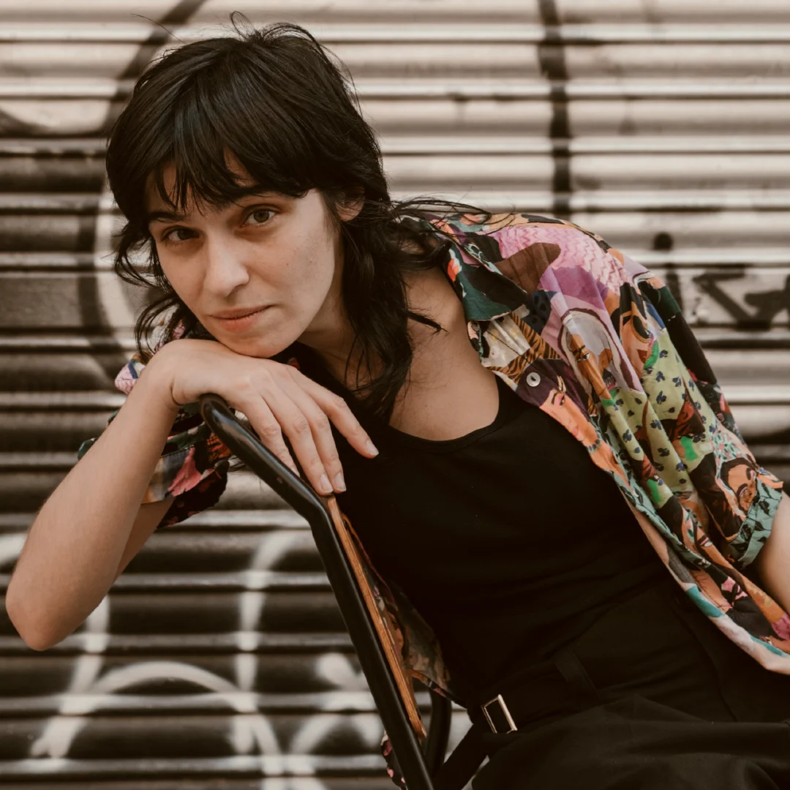

.jpg)
Palestine · 2024
The walls of Ayda Camp
Life inside the most tear-gas exposed refugee camp in the world: surveillance from the separation wall and children's dreams of freedom.
Narrative reporting on current affairs.
Narrative reporting on international affairs, human rights, and culture.
Life inside the most tear-gas exposed refugee camp in the world: surveillance from the separation wall and children's dreams of freedom.

Palestine under Israeli occupation, patriarchy, and the pandemic: on-the-ground accounts from Bethlehem, Al-Masara, and Aida refugee camp on women's daily resistance.

Activists gather near Beit Dajan to protest against an illegal Israeli outpost, as occupation forces repress the demonstration with force, tear gas, and concussion grenades.

Four gunshots are heard. Several leave bullet holes in the sign hanging above his head as Juilu Kevrot falls to the ground in Minsk.
.jpg)
“Evil exists and someone has to tell it”: an exploration of moral dilemmas, dealing with complex sources, and empathy in crime reporting at the Málaga Journalism Conference.

In-depth conversation with poet, director, and screenwriter Marta Synés on creative impulses, the audiovisual industry, feminism, and poetic authenticity.